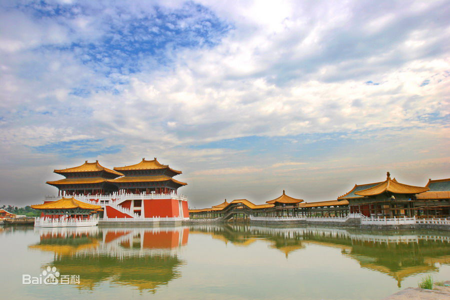

开封
开封是河南省地级市，简称汴，古称东京、汴京，为八朝古都 。位于黄河中下游平原东部，地处河南省中东部，东与商丘相连，西与郑州毗邻，南接许昌和周口，北与新乡隔黄河相望。
开封是中原经济区的核心城市之一，河南省中原城市群和沿黄"三点一线"黄金旅游线路三大中心城市之一。
开封已有两千七百多年的历史，是首批中国历史文化名城，中国八大古都之一，历史上的开封有着"琪树明霞五凤楼，夷门自古帝王州"、"汴京富丽天下无"的美誉，北宋东京开封更是当时世界第一大城市。
开封是世界上唯一一座城市中轴线从未变动的都城，城摞城遗址在世界考古史和都城史上少有。开封亦是清明上河图的原创地，有"东京梦华"之美誉，是中国优秀旅游城市、全国双拥模范城市、全国创建文明城市工作先进城市。
